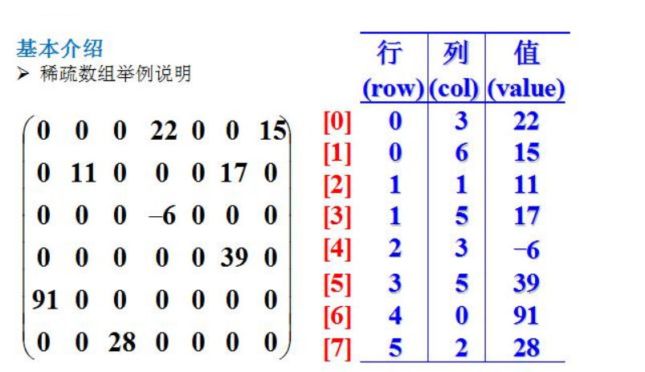

当一个数组中大部分元素为0，或者为同一个值的数组时，可以使用稀疏数组来保存该数组。
如下图所示：

稀疏数组的处理方法：
二维数组转稀疏数组思路：
稀疏数组转二维数组思路：
二维数组 转 稀疏数组
public class SparseArray {
public static void main(String[] args) {
//创建一个二维数组 11*11
int arr[][] = new int[11][11];
arr[1][2] = 1;
arr[3][4] = 2;
//先将原始数组打印出来
System.out.println("原始二维数组为：");
for (int[] row : arr) {
for (int data : row) {
System.out.print(data + " ");
}
System.out.println();
}
/**
* 将二维数组 转 稀疏数组
*/
//1、先遍历二维数组得到非0数据的个数
int sum = 0;
for (int i = 0; i < 11; i++) {
for (int j = 0; j < 11; j++) {
if (arr[i][j] != 0) {
sum++;
}
}
}
//2、创建对应的稀疏数组
int[][] sparseArr = new int[sum + 1][3];
//3、给稀疏数组第一行赋值
sparseArr[0][0] = 11;
sparseArr[0][1] = 11;
sparseArr[0][2] = sum;
//4、遍历二维数组，将非0的值存放到sparseArr中
int count = 0;
for (int i = 0; i < 11; i++) {
for (int j = 0; j < 11; j++) {
if (arr[i][j] != 0) {
count++;
sparseArr[count][0] = i;
sparseArr[count][1] = j;
sparseArr[count][2] = arr[i][j];
}
}
}
//打印稀疏数组
System.out.println();
System.out.println("得到的稀疏数组为：");
for (int[] row : sparseArr) {
for (int data : row) {
System.out.print(data + " ");
}
System.out.println();
}
}
}稀疏数组 转 二维数组
接着上面的稀疏数组，将其转回二维数组，下面提供一个转化方法:
public int[][] SparseArrayToArray(int[][] sparseArr) {
//1、先根据稀疏数组的第一行，根据第一行的数据，创建原始的二维数组
int arr[][] = new int[sparseArr[0][0]][sparseArr[0][1]];
//2、再读取稀疏数组的后几行数据（从第二行开始），并赋值给原始的二维数组即可
for (int i = 1; i < sparseArr.length; i++) {
arr[sparseArr[i][0]][sparseArr[i][1]] = sparseArr[i][2];
}
return arr;
}